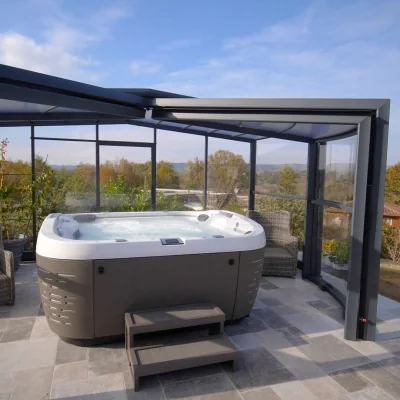

Profiter de l’eau autrement.
Piscine intérieure, paroi vitrée ou espace spa : ces projets demandent une réflexion spécifique sur l’architecture, la lumière, les usages et les équipements.

Un bassin pensé avec le volume du bâtiment.
Delpech présente la piscine intérieure comme une solution permettant de profiter de la baignade toute l’année. L’intégration architecturale, les ouvertures, les circulations et l’ambiance de la pièce prennent alors autant d’importance que la piscine elle-même.
- Relation avec les baies vitrées et la lumière naturelle
- Circulation autour du bassin
- Confort d’usage toute l’année

La transparence devient un élément architectural.
Le site Delpech décrit la piscine en verre comme un jeu de perspectives et de diffraction de la lumière, particulièrement cohérent avec des architectures largement vitrées.
- Effet de transparence spectaculaire
- Dialogue avec les façades et baies vitrées
- Projet fortement architectural

Créer une vraie zone de détente.
Le spa peut être intégré à l’espace piscine, encastré ou installé comme un espace autonome. Delpech présente aussi un espace de découverte dédié au spa dans son univers de services.
- Usage détente complémentaire à la piscine
- Installation extérieure ou intégrée
- Conception autour du confort et de l’intimité
Définissons le projet autour de votre façon de vivre l’eau.
Intérieur, spa, paroi vitrée ou combinaison de plusieurs usages : l’étude permet de cadrer les contraintes et les possibilités.
Demander un rendez-vous